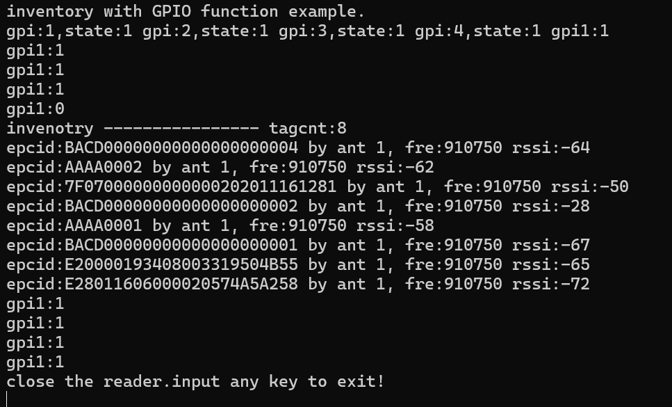
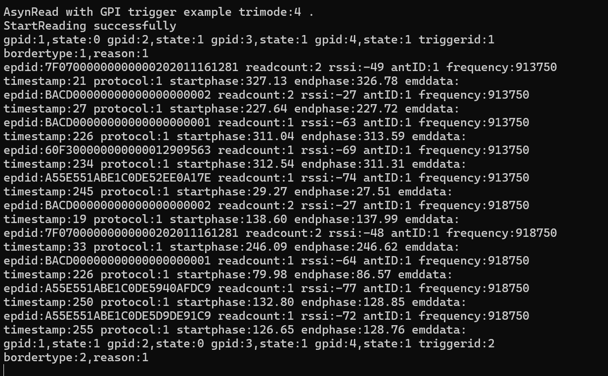

载入中...
搜索中...
未找到
GPIO功能
GPIO功能为读写器的通用输出输入接口。GPO功能可以对外指定引脚输出高低电平信号，常用于开关控制，例如：控制报警器，三色灯，喇叭等。
GPI功能则为接收外设输入信号，信号状态只有高低电平两种。例如：红外感应器信号。
获取一个GPI引脚的状态可使用接口函数GetGPI。
获取读写器所有GPI引脚的状态可使用接口函数GetGPIEx。
设置一个GPO引脚的状态可使用接口函数SetGPO。
注意：由于读写器差异，返回1状态并不总表示高电平。
C语言代码示例10-获取GPI设置GPO
/**
* GPIO功能/GPIO function
*/
#include < stdio.h>
#include < stdlib.h>
#include < string.h>
#if defined (__linux__)
#include < sys/time.h>
#include < unistd.h>
#define MUL 1000
#define MSLEEP(x) usleep(x*MUL)
#else
#include < windows.h>
#define MSLEEP(x) Sleep(x)
#endif
#include "ModuleReader.h"
time_t startt,endtt;
int tagcount=0;
int testseconds=10;//测试时间/test time 10s
int main()
{
int hreader;
char* address="192.168.1.160";
int antportnum=1;
READER_ERR err;
int ants[] = {1};
int tagcnt;
int timeout=200;
TAGINFO tag_;
int i;
int c;
int f;
int isbreak=0;
GpiInfo_ST gpiinfo;
int state1;
printf("inventory with GPIO function example.\n");
err=InitReader_Notype(&hreader, address, antportnum);
if (err != MT_OK_ERR)
{
printf("init reader err :%d\n", err);
scanf("%c",&c);
return -1;
}
err=GetGPIEx(hreader, &gpiinfo);
if(err!=MT_OK_ERR)
{
printf("GetGPIEx err :%d\n", err);
scanf("%c",&c);
return -1;
}
for(i=0;i< gpiinfo.gpiCount;i++)
{
printf("gpi:%d,state:%d ",gpiinfo.gpiStats[i].GpiId,gpiinfo.gpiStats[i].State);
if(gpiinfo.gpiStats[i].GpiId==1)
{
state1=gpiinfo.gpiStats[i].State;
}
}
startt=time((time_t*)NULL);
endtt=startt;
while (1)
{
endtt=time((time_t*)NULL);
if((endtt-startt)>=testseconds||isbreak)
{
break;
}
else
{
int state=0;
err= GetGPI(hreader, 1, &state);
if(err!=MT_OK_ERR)
{
break;
}
printf("gpi1:%d\n",state);
if(state!=state1)
{
err = TagInventory_Raw(hreader, ants, sizeof(ants)/sizeof(ants[0]), timeout, &tagcnt);
if (err == MT_OK_ERR)
{
printf("invenotry ---------------- tagcnt:%d\n", tagcnt);
if(tagcnt>0)
{
SetGPO(hreader,1,1);
MSLEEP(100);
SetGPO(hreader,1,0);
}
for (i = 0; i < tagcnt; ++i)
{
err = GetNextTag(hreader, &tag_);
//获取缓冲区标签一旦出错，不可以继续获取，重新盘点标签。
//if failed when called getnexttag,you should inventory again.
if(err!=MT_OK_ERR)
break;
printf("epcid:");
for(f = 0; f < tag_.Epclen; ++f)
{
printf("%02X", tag_.EpcId[f]);
}
printf(" by ant %d, fre:%d rssi:%d\n", tag_.AntennaID, tag_.Frequency,tag_.RSSI-256);
}
}
if(err!=MT_OK_ERR)
{
printf("inventory tags err:%d\n", err);
}
}
}
MSLEEP(1000);
}
CloseReader(hreader);
printf("close the reader.input any key to exit!\n");
scanf("%c",&c);
return 0;
}
C语言代码示例10-获取GPI设置GPO 输出结果

SDK集成了GPI触发异步盘存的功能，先配置BackReadOption中的GpiTrigger参数，
再使用异步盘存接口StartReading 函数启动，那么满足设定的GPI触发条件将会启动盘存
盘存模式一般是同步盘存模式，不过基于ARM7主板允许是快速模式盘存。停止GPI触发异步盘存使用StopReading接口函数。
C语言代码示例11-GPI触发异步盘存
/**
* 4种gpi触发盘点/ GPI trigger inventory in four ways
*/
#include < stdio.h>
#include < stdlib.h>
#include < string.h>
#if defined (__linux__)
#include < sys/time.h>
#include < unistd.h>
#define MUL 1000
#define MSLEEP(x) usleep(x*MUL)
#else
#include < windows.h>
#define MSLEEP(x) Sleep(x)
#endif
#include "ModuleReader.h"
time_t startt,endtt;
int tagcount=0;
const int testseconds=60;//测试时间/test time 60s
//0 无触发 1 条件1触发开始条件2触发停止,单个单向经过; 2 条件1触发开始超时停止,多个单向经过;
//3 条件1或2触发开始超时停止,多个双向向经过; 4 条件1或2触发开始然后条件1或2触发停止,单个双向经过
//0 no trigger;1 condition-1 trigger start,condition-2 trigger stop;2 condition-1 trigger start,timeout stop;3 condition-1 or condition-2
//trigger start,timeout stop ;4 condition-1 or condition-2 trigger start then condition-1 or condition-2 trigger stop.
int trimode=4;
int isbreak=0;
void PrintErrorDetail(int hreader)
{
int internalcode;
char *errdes;
char rdrip[50];
READER_ERR eh_err;
eh_err =GetReaderAddress(hreader, rdrip);
eh_err =GetLastDetailError(hreader, &internalcode, &errdes);
printf("reader %s error:%d, info:%s\n", rdrip, internalcode, errdes);
}
void OnTagRead(int hreader, TAGINFO *tag, void* cookie)
{
READER_ERR err=MT_OK_ERR;
TagFilter_ST filter;
HardwareDetails phd;
int c;
char out[124];
Hex2Str(tag->EpcId, tag->Epclen, out);
printf("epdid:%s readcount:%d rssi:%d antID:%d frequency:%d\ntimestamp:%d protocol:%d", out,tag->ReadCnt,
tag->RSSI-256,tag->AntennaID,tag->Frequency,tag->TimeStamp,tag->protocol);
GetHardwareDetails(hreader,&phd);
if(phd.module==MODOULE_SIM7100||
phd.module==MODOULE_SIM7200||
phd.module==MODOULE_SIM7300||
phd.module==MODOULE_SIM7400||
phd.module==MODOULE_SIM7500||
phd.module==MODOULE_SIM7600||
phd.module==MODOULE_SIM3100||
phd.module==MODOULE_SIM3200||
phd.module==MODOULE_SIM3300||
phd.module==MODOULE_SIM3400||
phd.module==MODOULE_SIM3500||
phd.module==MODOULE_SIM3600||
phd.module==MODOULE_SIM5100||
phd.module==MODOULE_SIM5200||
phd.module==MODOULE_SIM5300||
phd.module==MODOULE_SIM5400||
phd.module==MODOULE_SIM5500||
phd.module==MODOULE_SIM5600||
phd.module==MODOULE_SIM3110)
{
float endphase=((tag->Res[0]<< 8|tag->Res[1])&0xFFF)*360.0/4096;
float startphase=((tag->CRC[0]<< 8|tag->CRC[1])&0xFFF)*360.0/4096;
printf(" startphase:%.2f endphase:%.2f",startphase,endphase);
}
else
{
float phase=tag->Res[1] & 0x3f;
printf(" phase:%f endphase:%.2f",phase);
}
if(tag->EmbededDatalen>0)
{
char out2[124];
Hex2Str(tag->EmbededData, tag->EmbededDatalen, out2);
printf(" emddata:%s\r\n", out2);
}
else
{
printf(" emddata:\r\n");
}
}
void OnReadingError(int hReader, READER_ERR errcode, void* cookie)
{
printf("reader errcode:%d\n",errcode);
PrintErrorDetail(hReader);
/////
//可在此处重新打开读写器并继续盘存标签，可尝试多次，如果多次打开读写器不成功可放弃。
//You can reopen the reader here and continue to inventory the tags. You can try multiple times,
//but if you fail always, you can give up.
//////
}
void OnGpiState(int hReader, int triggerid, GpiInfo_ST *gpist, void* cookie)
{
int i;
for(i=0;i< gpist->gpiCount;i++)
{
printf("gpid:%d,state:%d ",gpist->gpiStats[i].GpiId,gpist->gpiStats[i].State);
}
printf("triggerid:%d\n",triggerid);
}
void OnTriggerBoundary(int hReader, int bordertype, int reason, void* cookie)
{
printf("bordertype:%d,reason:%d\n",bordertype,reason);
}
int main()
{
int hreader;
char* address="192.168.1.160";
int antportnum=1;
READER_ERR err;
int ants[] = {1};
int *pants=&ants[0];
int antlen=sizeof(ants)/sizeof(ants[0]);
int i;
unsigned short Maxp;
CustomParam_ST cpara;
AntPowerConf antpwrconf;
int c;
ConnAnts_ST conants;
unsigned char paraBuf[50+22]="Reader/Ex10fastmode";
HardwareDetails phd;
OnReadingErrorBlock reblk;
OnTagReadBlock trblk;
OnGpiTriggerBlock ongtb;
BackReadOption BROption;
printf("AsynRead with GPI trigger example trimode:%d .\n",trimode);
err=InitReader_Notype(&hreader, address, antportnum);
if (err != 0)
{
printf("init reader err :%d\n", err);
scanf("%c",&c);
return -1;
}
if ((err=ParamGet(hreader, MTR_PARAM_RF_MAXPOWER, &Maxp)) != MT_OK_ERR)
{
printf("ParamGet err :%d input any key to exit!\n", err);
scanf("%c",&c);
return ;
}
antpwrconf.antcnt = antportnum;
for(i=0;i< antportnum;i++)
{ antpwrconf.Powers[i].antid = i+1;
antpwrconf.Powers[i].readPower = Maxp;
antpwrconf.Powers[i].writePower = Maxp;}
if (ParamSet(hreader, MTR_PARAM_RF_ANTPOWER, &antpwrconf) != MT_OK_ERR)
{
printf("ParamSet MTR_PARAM_RF_ANTPOWER err\n");
scanf("%c",&c);
return -1;
}
//获取已连接天线/get connected antennnas
if (ParamGet(hreader, MTR_PARAM_READER_CONN_ANTS, &conants) == MT_OK_ERR)
{
if(conants.antcnt>0)
{
printf("get connected antennas \n");
pants=&conants.connectedants[0];
antlen=conants.antcnt;
}
}
reblk.handler = OnReadingError;
reblk.cookie = NULL;
SetReadingErrorHandler(hreader, reblk);
trblk.handler = OnTagRead;
trblk.cookie = NULL;
SetTagReadHandler(hreader, trblk);
memset(&BROption, 0, sizeof(BackReadOption));
BROption.IsFastRead = 0; //0 普通模式 1 快速模式 /0 general mode 1 fast mode
BROption.ReadDuration = 250*antlen;
BROption.ReadInterval = 0;
BROption.TMFlags.IsAntennaID=1;
BROption.TMFlags.IsFrequency=1;
BROption.TMFlags.IsRSSI=1;
ongtb.cookie=NULL;
ongtb.gshandler=OnGpiState;
ongtb.gtbhandler=OnTriggerBoundary;
SetGpiTriggerHandler(hreader,ongtb);
if(trimode!=0)
{ BROption.IsGPITrigger=1;}
if(trimode==1)
{BROption.GpiTrigger.GpiTriggerType=GPITRIGGER_TRI1START_TRI2STOP;
BROption.GpiTrigger.StopTriggerTimeout=5000;//5000ms
// trigger to inventory when gpi1's state is 0
BROption.GpiTrigger.GpiTrigger1States.gpiCount=1;
BROption.GpiTrigger.GpiTrigger1States.gpiStats[0].GpiId=1;
BROption.GpiTrigger.GpiTrigger1States.gpiStats[0].State=0;
//stop to inventory when gpi2's state is 0
BROption.GpiTrigger.GpiTrigger2States.gpiCount=1;
BROption.GpiTrigger.GpiTrigger2States.gpiStats[0].GpiId=2;
BROption.GpiTrigger.GpiTrigger2States.gpiStats[0].State=0;
}
else if(trimode==2)
{BROption.GpiTrigger.GpiTriggerType=GPITRIGGER_TRI1START_TIMEOUTSTOP;
//trigger to inventory when gpi1's state is 0,stop after 6 seconds
BROption.GpiTrigger.StopTriggerTimeout=6;//must more than 5s
BROption.GpiTrigger.GpiTrigger1States.gpiCount=1;
BROption.GpiTrigger.GpiTrigger1States.gpiStats[0].GpiId=1;
BROption.GpiTrigger.GpiTrigger1States.gpiStats[0].State=0;
}
else if(trimode==3)
{BROption.GpiTrigger.GpiTriggerType=GPITRIGGER_TRI1ORTRI2START_TIMEOUTSTOP;
//trigger to inventory when gpi1's state is 0 or gpi2'state is 0,stop after 6 seconds
BROption.GpiTrigger.StopTriggerTimeout=6;//must more than 5s
BROption.GpiTrigger.GpiTrigger1States.gpiCount=1;
BROption.GpiTrigger.GpiTrigger1States.gpiStats[0].GpiId=1;
BROption.GpiTrigger.GpiTrigger1States.gpiStats[0].State=0;
BROption.GpiTrigger.GpiTrigger2States.gpiCount=1;
BROption.GpiTrigger.GpiTrigger2States.gpiStats[0].GpiId=2;
BROption.GpiTrigger.GpiTrigger2States.gpiStats[0].State=0;
}
else if(trimode==4)
{
//trigger to inventory when gpi1's state is 0 or gpi2'state is 0，
//then stop when gpi1's state is 0 or gpi2's state is 0
BROption.GpiTrigger.GpiTriggerType=GPITRIGGER_TRI1ORTRI2START_TRI1ORTRI2STOP;
BROption.GpiTrigger.StopTriggerTimeout=5000;//5000ms
BROption.GpiTrigger.GpiTrigger1States.gpiCount=1;
BROption.GpiTrigger.GpiTrigger1States.gpiStats[0].GpiId=1;
BROption.GpiTrigger.GpiTrigger1States.gpiStats[0].State=0;
BROption.GpiTrigger.GpiTrigger2States.gpiCount=1;
BROption.GpiTrigger.GpiTrigger2States.gpiStats[0].GpiId=2;
BROption.GpiTrigger.GpiTrigger2States.gpiStats[0].State=0;
}
err = StartReading(hreader, pants, antlen, &BROption);
if (err == MT_OK_ERR)
{ printf("StartReading successfully\n");
startt=time((time_t*)NULL);
endtt=startt;}
else
{
printf("StartReading failed err:%d\n", err);
scanf("%c",&c);
return -1;
}
while (1)
{
endtt=time((time_t*)NULL);
if((endtt-startt)>=testseconds||isbreak)
{
StopReading(hreader);
break;
}
MSLEEP(1000);
}
CloseReader(hreader);
printf("close the reader.input any key to exit!\n");
scanf("%c",&c);
return 0;
}
C语言代码示例11-GPI触发异步盘存 输出结果

- 制作者
 1.11.0
1.11.0